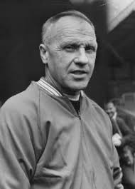
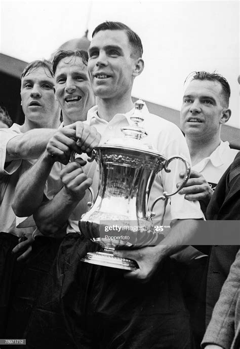
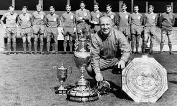

-

Bill Shankly -
A charismatic, famously quotable man who realised his dream of turning LFC into English football's most dominant force, Shankly's spirit has quite rightly been stitched into the very fabric of the club.
-
As a player, he played for Preston winning the FA cup in 1994 and made his Scotalnd debut in 1938
-

Bill Shankly winning the FA cup -
The Scot took charge of a Second Division Liverpool outfit that had been starved of success on December 1, 1959, and set about laying the foundations that would see three First Division titles, one Division Two title, two FA Cups and one UEFA Cup claimed during his time in charge.
-

Bill Shankly's trophies -

Bill Shankly's Statue outside Anfield -
The manager cemented his place as one of the greatest managers of the club, and of all time, becming a liverpool legend.
-
Click here to learn more abut Bill Shankley